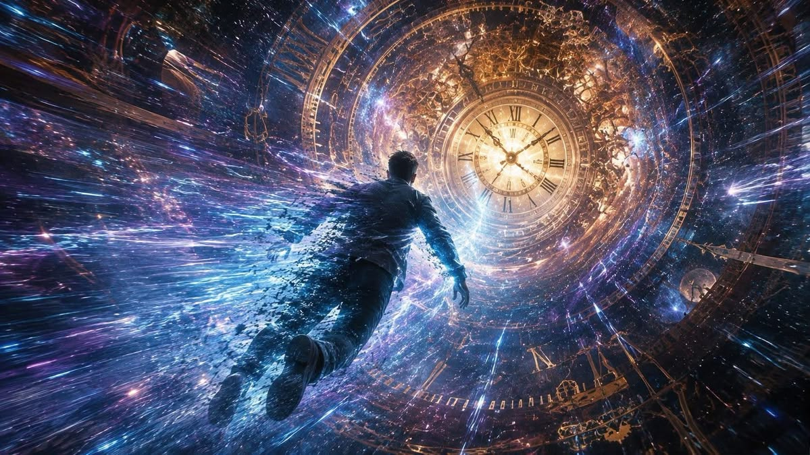
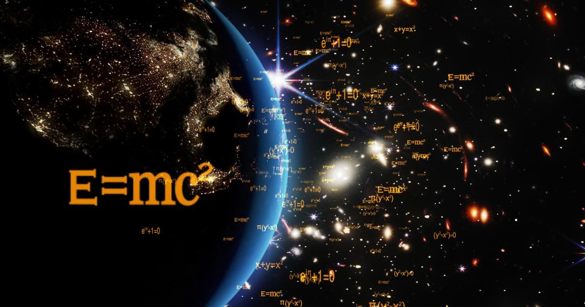
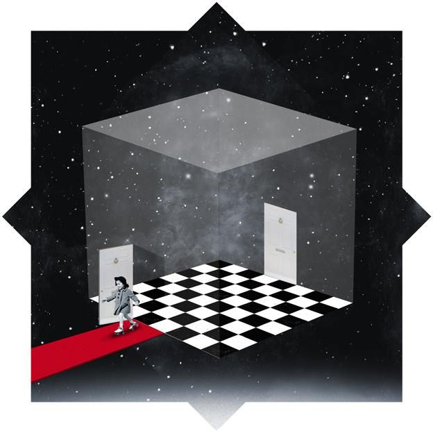

Años luz y más
“Las estrellas que vemos están a miles y cientos de años luz, estamos viendo el pasado; probablemente vemos estrellas que en realidad ya murieron.”
Índice

El futuro
El tiempo no es un reloj universal e invariable que avanza al mismo ritmo para todos. El tiempo es elástico, relativo y depende enteramente de la velocidad a la que nos movamos y de la intensidad de la gravedad que nos rodea.
Esta flexibilidad del espacio-tiempo es la razón por la cual viajar al futuro es científicamente posible, mientras que viajar al pasado presenta barreras físicas y lógicas infranqueables. Esta afirmación es propia de Einstein.

¿Atrapados en el infinito?
Piénsalo así, el espacio es un lugar infinito lleno de cosas inimaginables con infinitas posibilidades. Imagina que ese espacio es una pequeña caja y nosotros estamos dentro de ella; varias teorías afirman que el espacio podría ser esta caja que hace y deshace pero todo vuelve a lo mismo, ¿es por eso que nosotros moriremos pero renaceremos? Lo que asusta es, ¿qué hay más allá de la caja? ¿Qué hay más allá del infinito espacio? ¿QUIÉN CREÓ EL ESPACIO?
